公开视频内容合集
AI 视频字幕、洞见目录与资料库
每一期集中保存原视频链接、B站简介、中文字幕稿、时间轴、提纲图和补充资料。点开任意卡片即可浏览资源和网页文字稿。
共 46 期字幕与提纲集中管理GitHub Pages 自动发布
发布时间：2026-08-07
如何在 agent 时代做设计｜Stephen Haney
原题：How To Design In The Agent Era
资源字幕时间轴提纲图
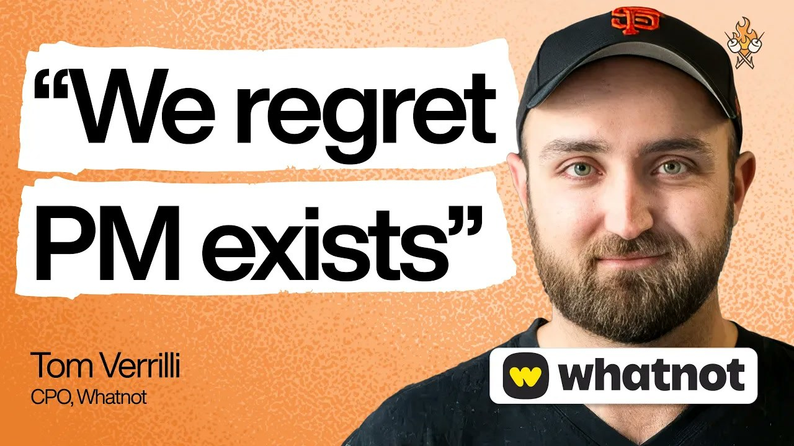
发布时间：2026-08-04 15:47:49
为什么说“产品经理岗位本不该存在” | Tom Verrilli（Whatnot首席产品官）
原题：This CPO regrets that product management exists | Tom Verrilli (CPO of Whatnot)
资源字幕时间轴提纲图
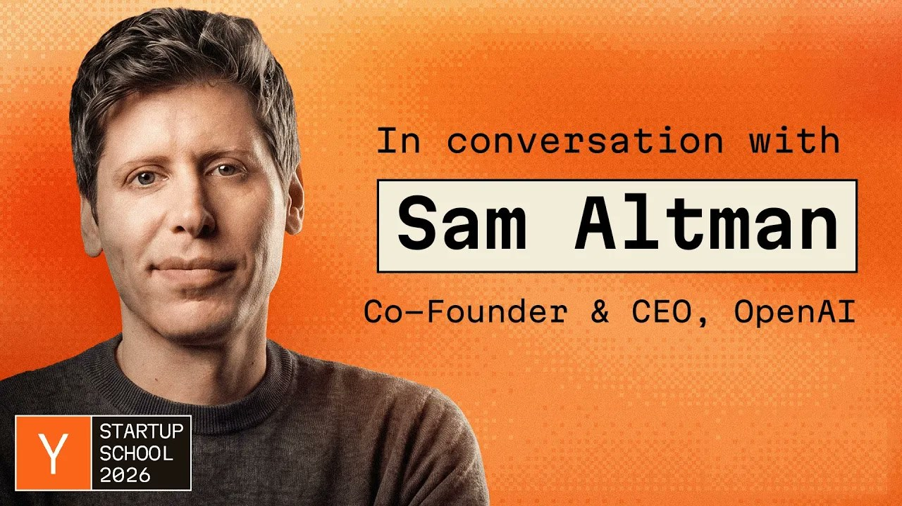
发布时间：2026-08-03 22:07:02
从没有比现在更适合创业的时候 | Sam Altman
原题：Sam Altman: "Never a Better Time to Do a Startup"
资源字幕时间轴提纲图
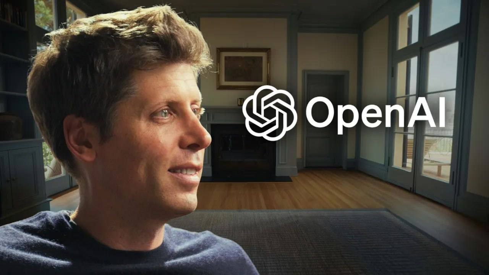
发布时间：2026-08-03 16:53:23
AI 时代如何创办一家初创公司 | Sam Altman
原题：Sam Altman - How to Start a Startup
资源字幕时间轴提纲图
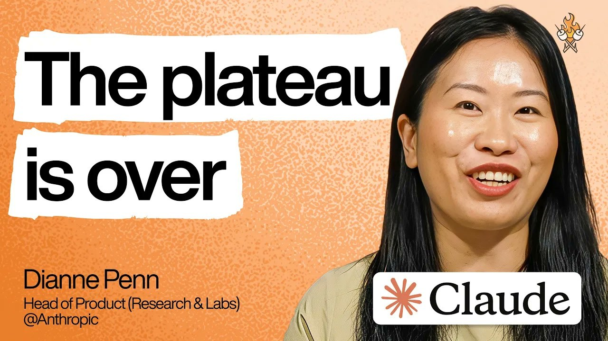
发布时间：2026-08-03 11:28:19
AI 为何再次垂直起飞｜Dianne Penn(Anthropic)
原题：Why AI is going vertical (again) | Dianne Penn (Anthropic)
资源字幕时间轴提纲图
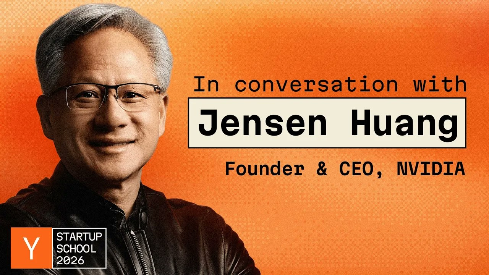
发布时间：2026-08-01 21:45:11
成就 NVIDIA 的思维方式 | 黄仁勋
原题：Jensen Huang: The Mindset That Built NVIDIA
资源字幕时间轴提纲图
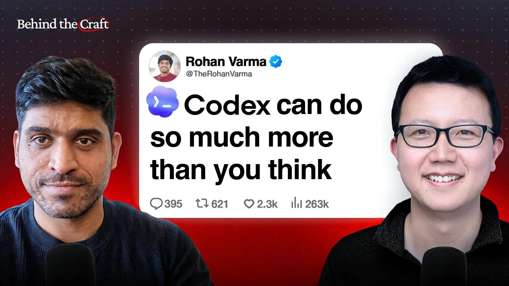
发布时间：2026-07-28 19:49:26
深入解析 OpenAI 内部如何用 Codex 做产品工作 | Rohan Varma
原题：Inside How OpenAI Uses Codex to Do Product Work | Rohan Varma
资源字幕时间轴提纲图
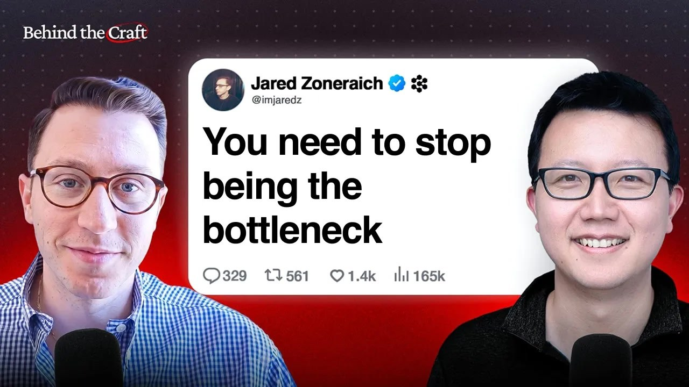
发布时间：2026-07-28 16:18:42
如何打造会自我检查工作成果的 AI Agent | Jared Zoneraich
原题：How to Build AI Agents That Check Their Own Work | Jared Zoneraich
资源字幕时间轴提纲图
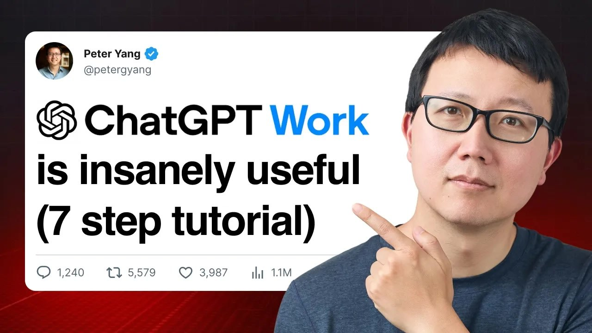
发布时间：2026-07-28 14:05:01
用 ChatGPT Work 和 GPT-5.6 搭建个人 AI 工作流｜Peter Yang
原题：How I Use ChatGPT Work and GPT-5.6 to Do Everything (Beginner Tutorial)
资源字幕时间轴提纲图
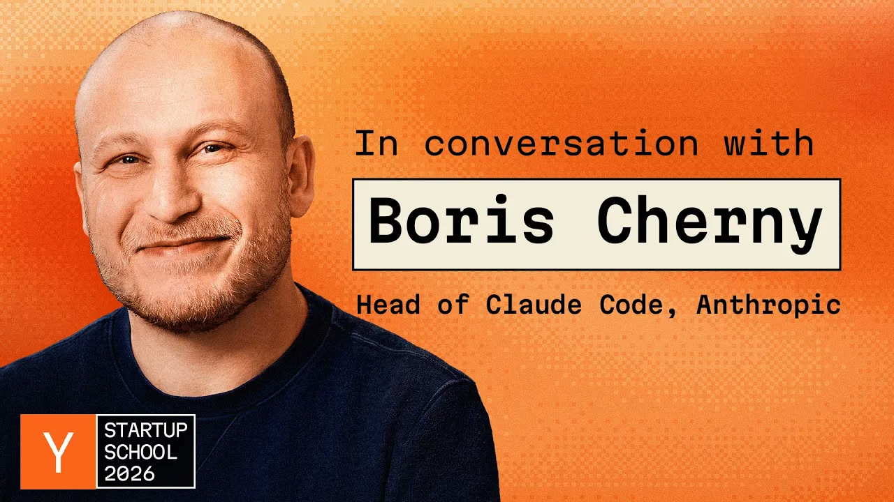
发布时间：2026-07-27
Claude Code 为什么删掉 80% 系统提示词｜Boris Cherny
原题：Boris Cherny: We Cut 80% of Claude Code’s Prompt
资源字幕时间轴提纲图
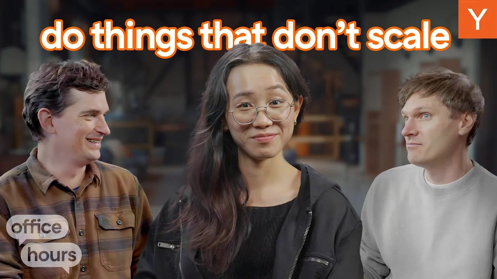
发布时间：2026-07-21 22:22:35
YC合伙人谈：为什么创业早期要做不能规模化的事
原题：Startup Experts Discuss Doing Things That Don't Scale
资源字幕时间轴提纲图
发布时间：2026-07-21 21:17:19
YC创业课:创业公司如何拿下第一批客户 | Gustaf Alströmer
原题：How to Get Your First Customers | Startup School
资源字幕时间轴提纲图
发布时间：2026-07-21 19:24:08
YC创业课:如何与用户交谈 | Gustaf Alströmer
原题：How To Talk To Users | Startup School
资源字幕时间轴提纲图
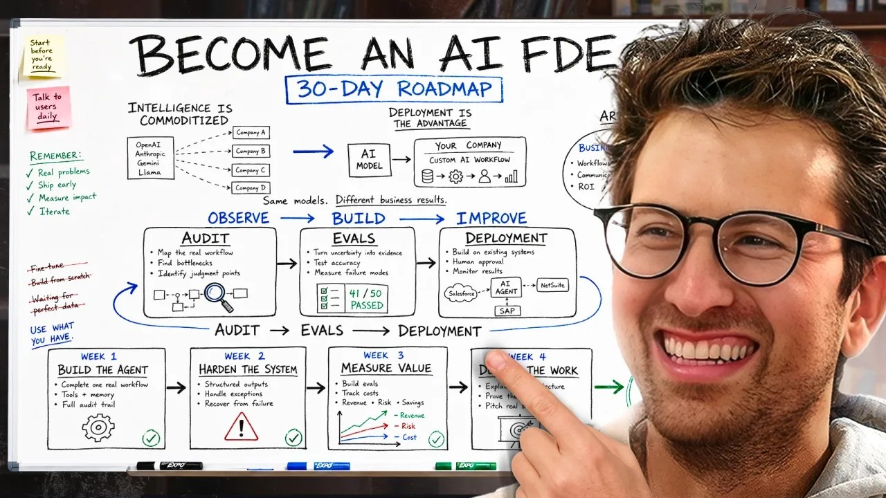
发布时间：2026-07-21 15:18:40
揭秘年薪百万美元的 AI 工作：FDE | Vas
原题：FDE: The $1M/Year AI Job Explained
资源字幕时间轴提纲图
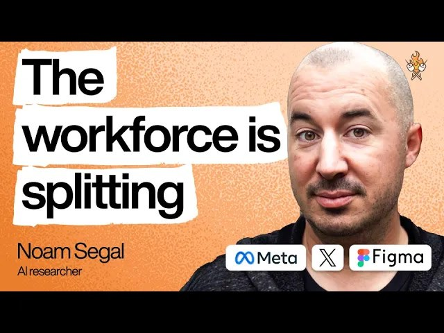
发布时间：2026-07-16 11:38:28
观点：美国AI 蜜月期正在结束，科技从业者已经感受到了｜Noam Segal
原题：Why the AI's honeymoon is ending (and tech workers are feeling it) | Noam Segal
资源字幕时间轴提纲图
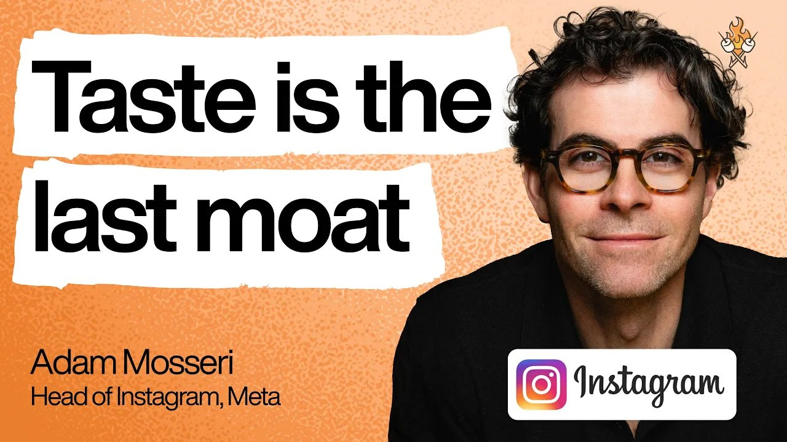
发布时间：2026-07-14 16:12:11
AI 时代，品味、人的真实性与判断力为何愈发重要 | Adam Mosseri（Instagram 负责人）
原题：The rise of taste, human authenticity and judgment in an AI world | Adam Mosseri (Head of IG)
资源字幕时间轴提纲图
发布时间：2026-07-07 17:11:23
超大规模测试时计算如何改变 AI 的基准测试、安全与研究 | Noam Brown(OpenAI）
原题：Really Big Test-Time Compute in AI Changes Benchmarks, Safety and Research with OpenAI's Noam Brown
资源字幕时间轴提纲图
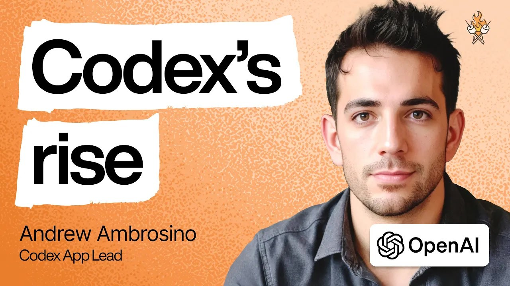
发布时间：2026-06-30 23:17:16
OpenAI Codex 负责人谈 AI 时代产品工作的重塑 | Andrew Ambrosino
原题：OpenAI Codex lead on the new shape of product work | Andrew Ambrosino
资源字幕时间轴提纲图
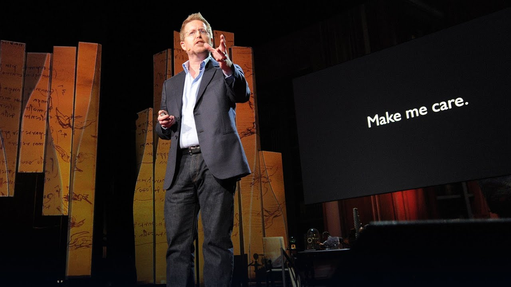
发布时间：2026-06-16 20:42:41
好故事的线索|Andrew Stanton
原题：The clues to a great story | Andrew Stanton | TED
资源字幕时间轴提纲图
发布时间：2026-06-16 20:21:56
故事的形状|Kurt Vonnegut
原题：Kurt Vonnegut on the Shapes of Stories
资源字幕时间轴提纲图
发布时间：2026-06-16 20:17:25
讲故事|Ira Glass
原题：Ira Glass on Storytelling
资源字幕时间轴提纲图
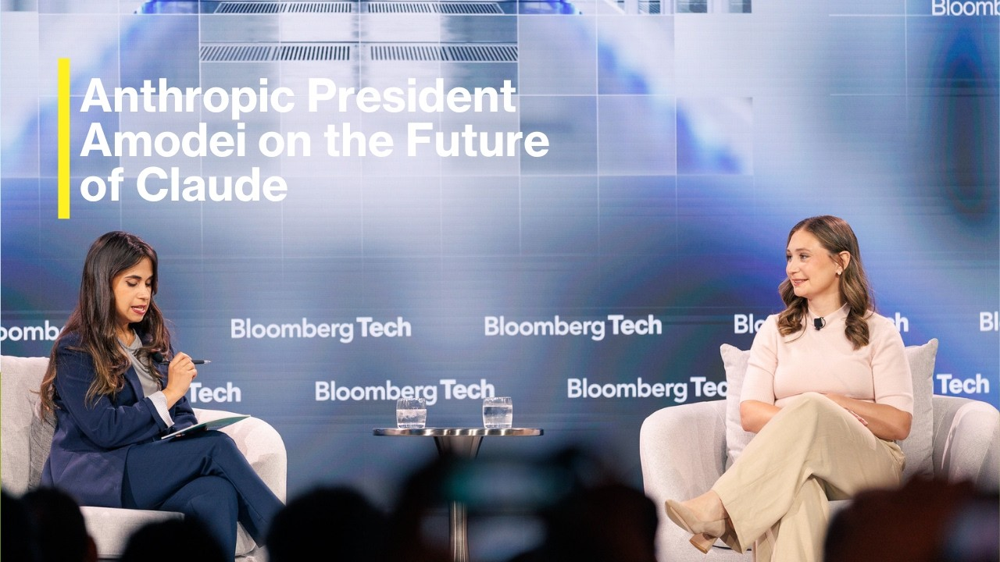
发布时间：2026-06-11 20:27:00
Anthropic 总裁 Daniela Amodei 谈 Claude 的未来|Daniela Amodei
原题：Anthropic President Amodei on the Future of Claude
资源字幕时间轴提纲图
发布时间：2026-06-11 11:23:22
人工智能科学家 Bengio 谈如何打造更安全的智能体|Bengio
原题：AI Scientist Bengio on Engineering Safer Agents
资源字幕时间轴提纲图
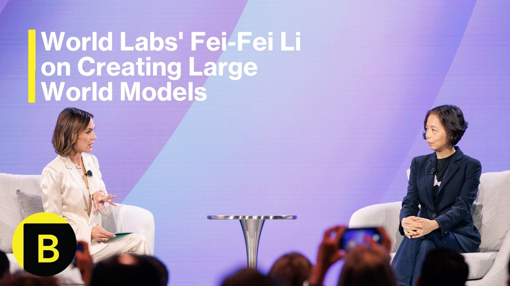
发布时间：2026-06-09 21:12:42
World Labs 李飞飞谈大型世界模型的构建|李飞飞
原题：World Labs' Fei-Fei Li on Creating Large World Models
资源字幕时间轴提纲图
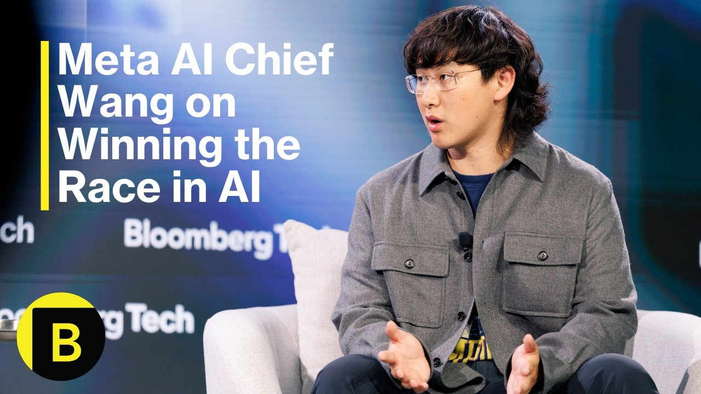
发布时间：2026-06-09 19:32:12
Meta AI 负责人 Alexandr Wang 谈如何赢得 AI 竞赛|Alexandr Wang
原题：Meta AI Chief Wang on Winning the Race in AI
资源字幕时间轴提纲图
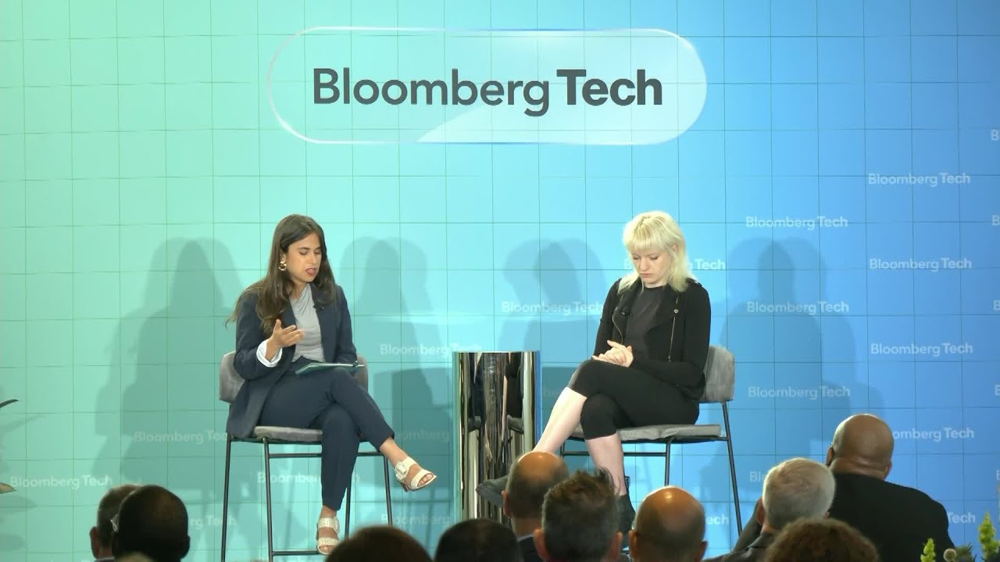
发布时间：2026-06-08 23:08:39
Anthropic 的人工智能 Claude 有意识吗？| Amanda Askell
原题：Anthropic's Ethicist on Whether AI Can Become Conscious
资源字幕时间轴提纲图
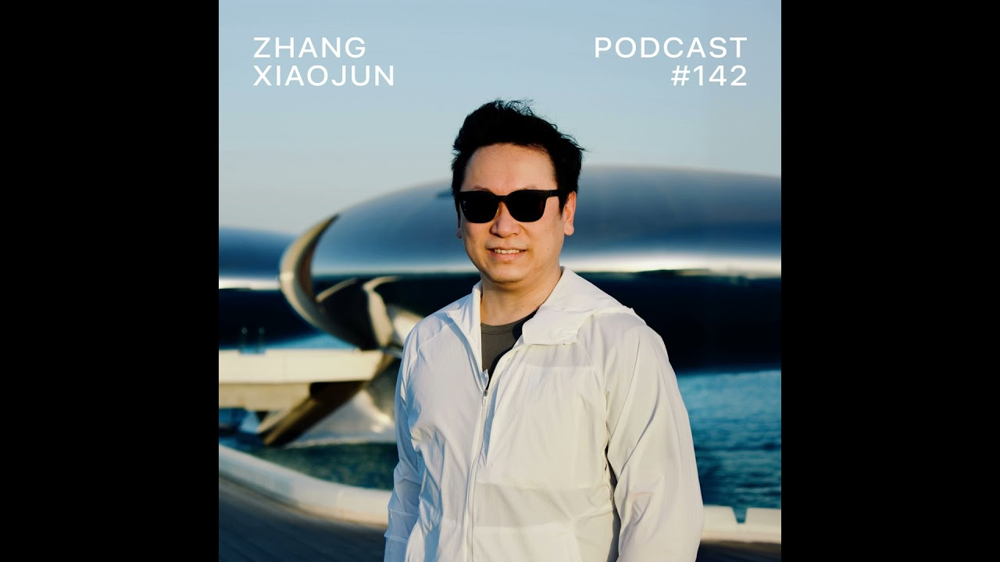
发布时间：2026-06-02 16:32:45
下一个“字节级”的AI巨头，可能长得完全不像字节|戴雨森
原题：142. 雨森的创投观察第2集：Harness、下一个字节、2026大机会和Stanley Druckenmiller
资源字幕时间轴提纲图
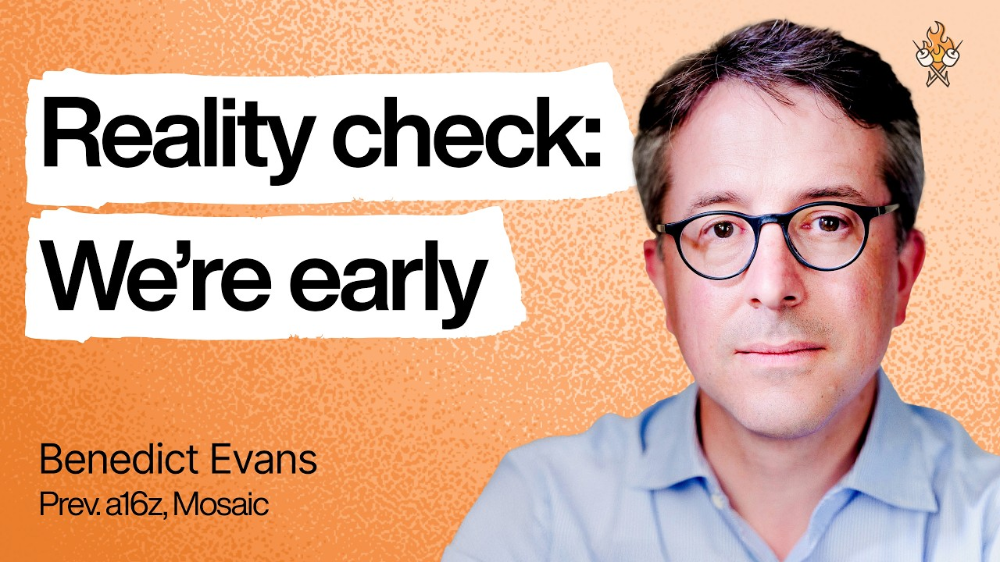
发布时间：2026-06-02 14:15:05
别再被失业恐慌骗了，AI只消灭任务，不消灭工作|Benedict Evans
原题：The most rational take on AI you’ll hear this year | Benedict Evans
资源字幕时间轴提纲图
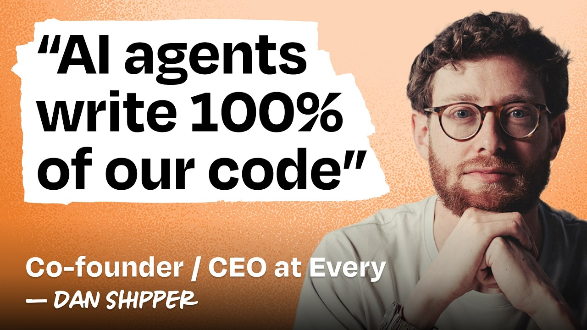
发布时间：2026-05-26 20:59:45
AI 原生初创公司：5 款产品，7 位数营收，100% AI 编写代码 |Dan Shipper(CEO of Every)
原题：The AI-native startup: 5 products, 7-figure revenue, 100% AI-written code. | Dan Shipper (Every)
资源字幕时间轴提纲图
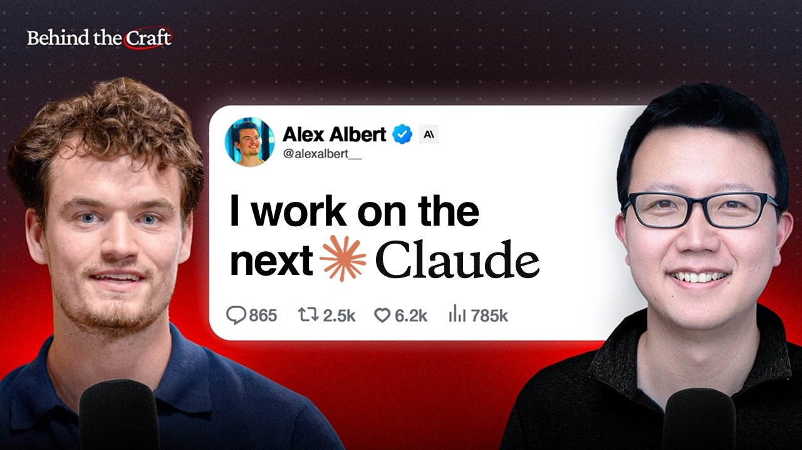
发布时间：2026-05-25 19:28:11
深入了解 Anthropic 如何构建下一代 Claude | Alex Albert
原题：Inside How Anthropic Is Building the Next Claude | Alex Albert
资源字幕时间轴提纲图
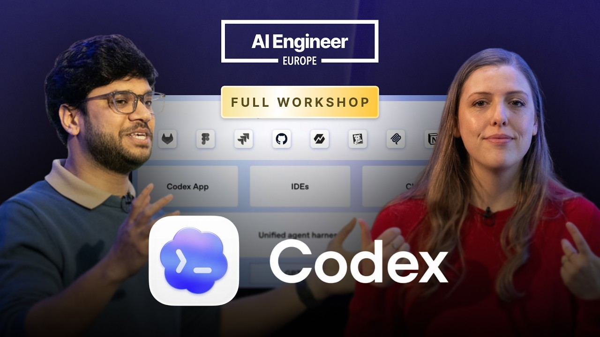
发布时间：2026-05-19 18:06:27
OpenAI Codex 插件、自动化与子智能体|Vaibhav Srivastav & Katia Gil Guzman
原题：OpenAI Codex Masterclass — Vaibhav Srivastav & Katia Gil Guzman
资源字幕时间轴提纲图
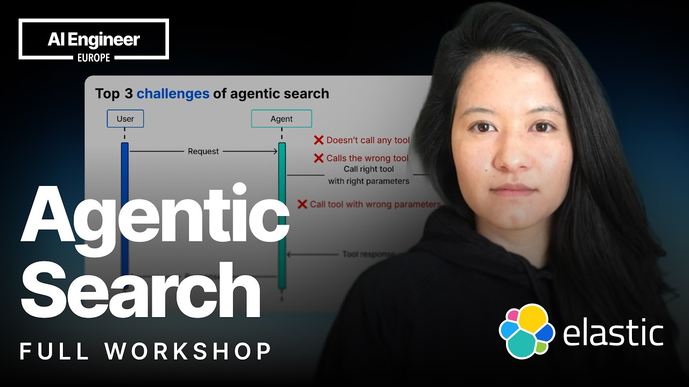
发布时间：2026-05-19 11:56:07
用于上下文工程的代理式搜索|Leonie Monigatti
原题：Agentic Search for Context Engineering — Leonie Monigatti, Elastic
资源字幕时间轴提纲图
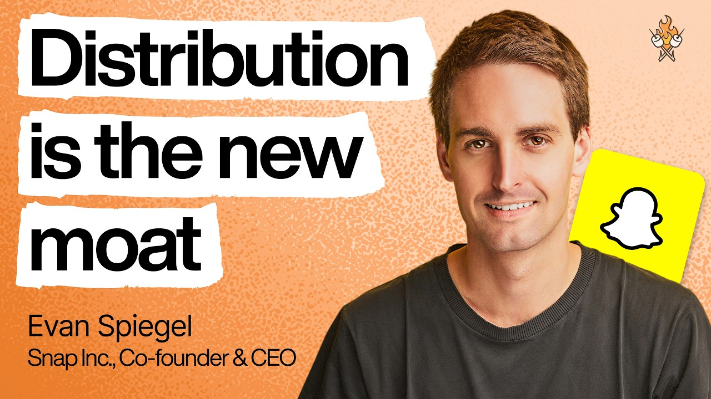
发布时间：2026-05-18 20:41:15
当软件不再是护城河时如何取胜 | Evan Spiegel (Snapchat CEO)
原题：How to win when software is not a moat | Evan Spiegel (Snapchat CEO)
资源字幕时间轴提纲图

发布时间：2026-05-14 22:08:53
为什么构建评估（Eval）平台如此困难|Phil Hetzel(Braintrust)
原题：Why building eval platforms is hard — Phil Hetzel, Braintrust
资源字幕时间轴提纲图
发布时间：2026-05-14 01:05:45
交付复杂的AI应用程序|Braintrust & Trainline
原题：Shipping complex AI applications — Braintrust & Trainline
资源字幕时间轴提纲图
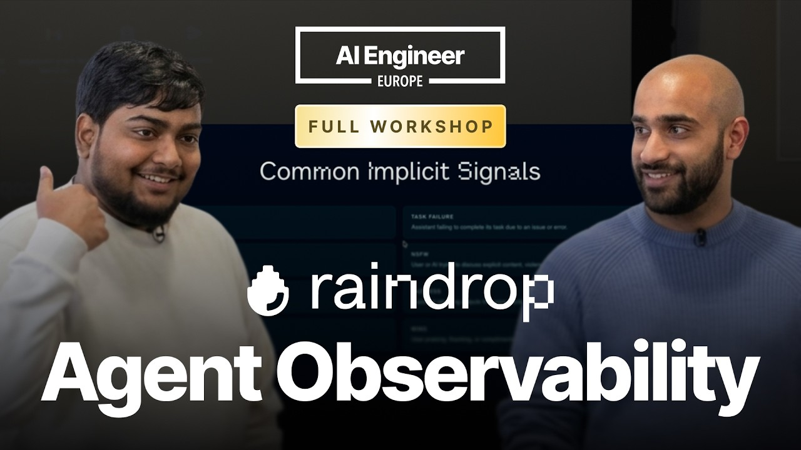
发布时间：2026-05-13 01:34:56
超越传统评估的 AI 可观测性 | Danny Gollapalli&Zubin Koticha
原题：Full Workshop: AI Observability Beyond Evals — Danny Gollapalli & Zubin Koticha, Raindrop
资源字幕时间轴提纲图
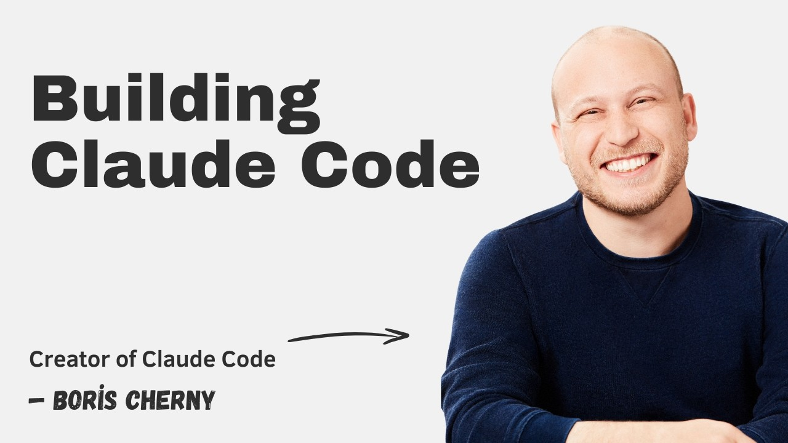
发布时间：2026-05-05 21:05:40
与 Boris Cherny 一起构建 Claude Code
原题：Building Claude Code with Boris Cherny
资源字幕时间轴提纲图
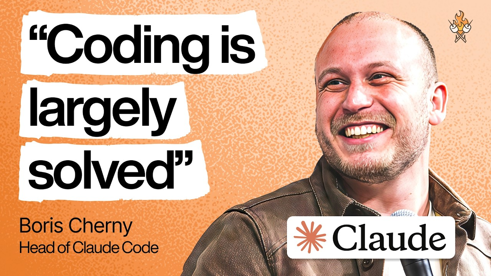
发布时间：2026-05-03 22:28:11
当编程被终结后会发生什么？ | Boris Cherny（Claude Code 负责人）
原题：Head of Claude Code: What happens after coding is solved | Boris Cherny
资源字幕时间轴提纲图
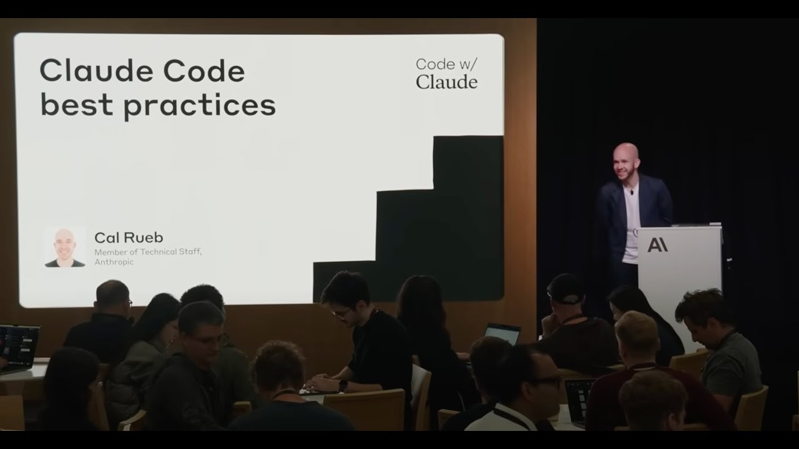
发布时间：2026-05-02 11:01:43
Claude Code 最佳实践及功能解析|Cal Rueb
原题：Claude Code best practices | Code w/ Claude
资源字幕时间轴提纲图

发布时间：2026-04-28 00:59:41
Anthropic 的产品团队如何保持业内领先的迭代速度 | Cat Wu（Claude Code 产品负责人）
原题：How Anthropic’s product team moves faster than anyone else | Cat Wu (Head of Product, Claude Code)
资源字幕时间轴提纲图
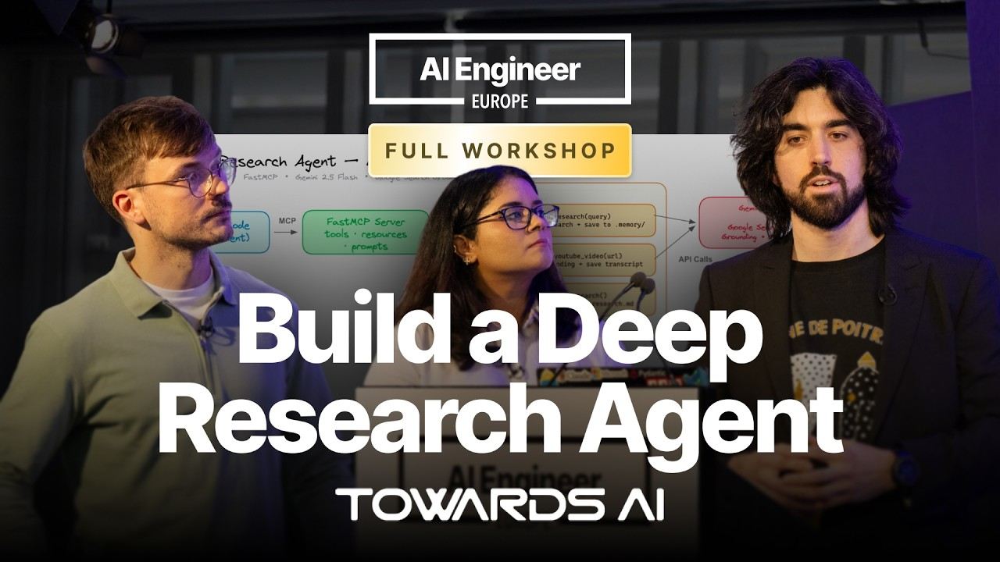
发布时间：2026-04-22 10:35:54
完整工作坊：构建你自己的深度研究智能体|Louis-François Bouchard, Paul Iusztin, Samridhi
原题：Full Workshop: Build Your Own Deep Research Agents - Louis-François Bouchard, Paul Iusztin, Samridhi
资源字幕时间轴提纲图
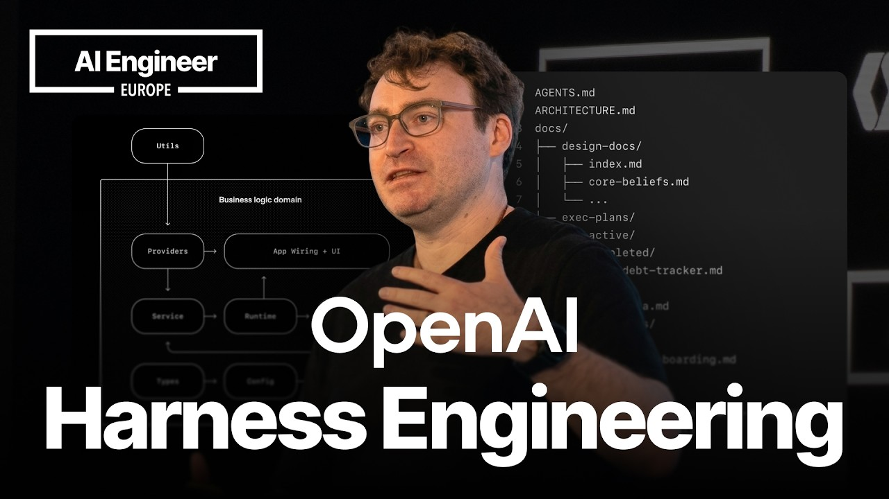
发布时间：2026-04-21 23:38:41
驾驭工程：人类当主管，智能体敲代码，如何重塑软件开发|Ryan Lopopolo, OpenAI
原题：Harness Engineering: How to Build Software When Humans Steer, Agents Execute — Ryan Lopopolo, OpenAI
资源字幕时间轴提纲图
杰码商业:“龙虾”智能体爆火，AI如何重塑营销与获客引擎？【转载】
发布时间：2026-04-14 18:38:49
杰码商业:“龙虾”智能体爆火，AI如何重塑营销与获客引擎？【转载】
原题：一堂价值3000万的AI营销课
资源字幕时间轴提纲图
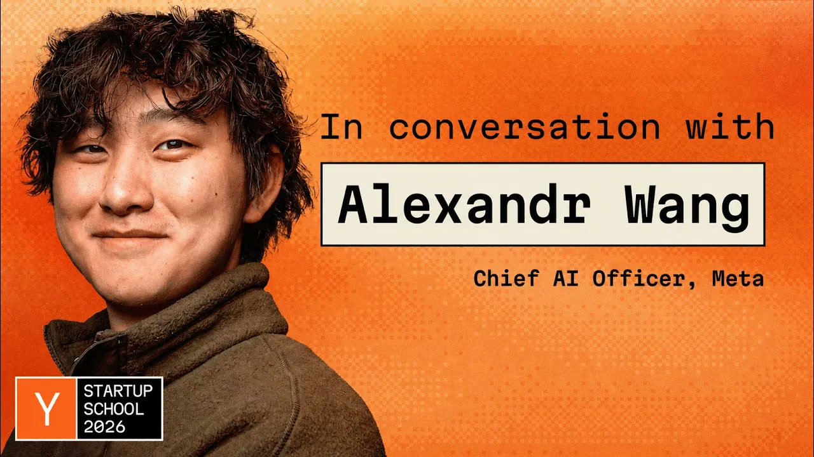
发布时间：待补充
现在是 AI 创业最好时机｜Alexandr Wang
原题：Alexandr Wang: “This is a Once-in-a-Civilization Opportunity”
资源字幕时间轴提纲图
全程用 AI 做动效海报
发布时间：待补充
全程用 AI 做动效海报
原题：待补充
资源字幕时间轴提纲图

发布时间：待补充
AI 悖论：自动化越多，人越多，工作也越多
原题：待补充
资源字幕时间轴提纲图